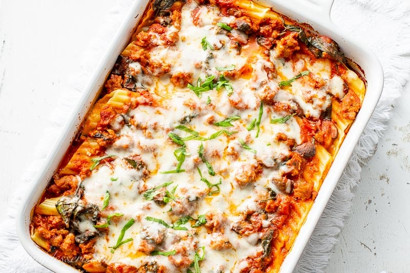

Stuffed Manicotti Pasta Shells with Ricotta Cheese and Spinach Filling
Ingredients
- 9 Manicotti pasta shells
- 1 tablespoon olive oil
- 8 oz spinach
- 1 cup Parmesan shredded
- 1 cup ricotta cheese
- 2 tablespoons olive oil
- 1 onion chopped
- 5 garlic cloves chopped
- 28 oz whole plum tomatoes (from the can)
- 1 tablespoon basil
- 1/2 cup red wine
- salt and pepper
- 1/4 cup Parmesan cheese (to serve)
Directions
- Cook spinach in 1 tablespoon olive oil until wilted. Drain of all juices, and chop spinach.
- In a medium pan, mix together ricotta cheese, Parmesan cheese and cooked spinach from step 1. Salt to taste.
- Cook Manicotti pasta shells according to instructions, usually by boiling for 10 minutes. Drain, cool briefly and immediately fill pasta shells with ricotta cheese and spinach filling. Don't let the shells sit out unfilled for too long, because they will flatten, lose their shape and when you try to fill them, they will break. Start filling the shells immediately after draining them and briefly cooling. Set aside and keep them warm in a warm drawer.
- Heat olive oil over medium heat, add onion, garlic and cook until softened, about 7 minutes. Add tomatoes and basil and wine and cook on low heat, covered, for about 40 minutes. Place the sauce in food processor and process until puree consistency. Return the sauce to the same pan, re-heat gently and add salt and pepper to taste.
- Pour a small amount of tomato sauce in the middle of the individual plate. Place 2 or 3 spinach stuffed manicotti pasta shells on top of the sauce in middle of the plate, then pour more sauce on top and around pasta shells. Sprinkle with grated Parmesan cheese and cracked fresh pepper on top of red sauce.

Recommended Recipes
Tomato Spinach Chicekn Spaghetti
Paccheri Pasta with Sausage
Chicken Ravioli with Pesto and Veggies